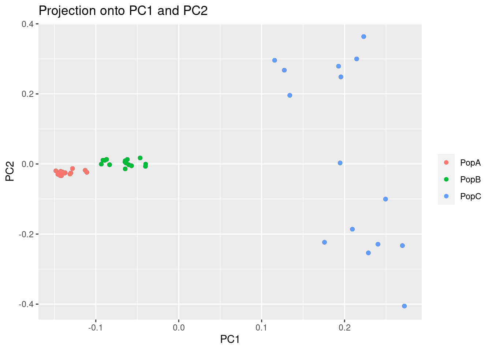
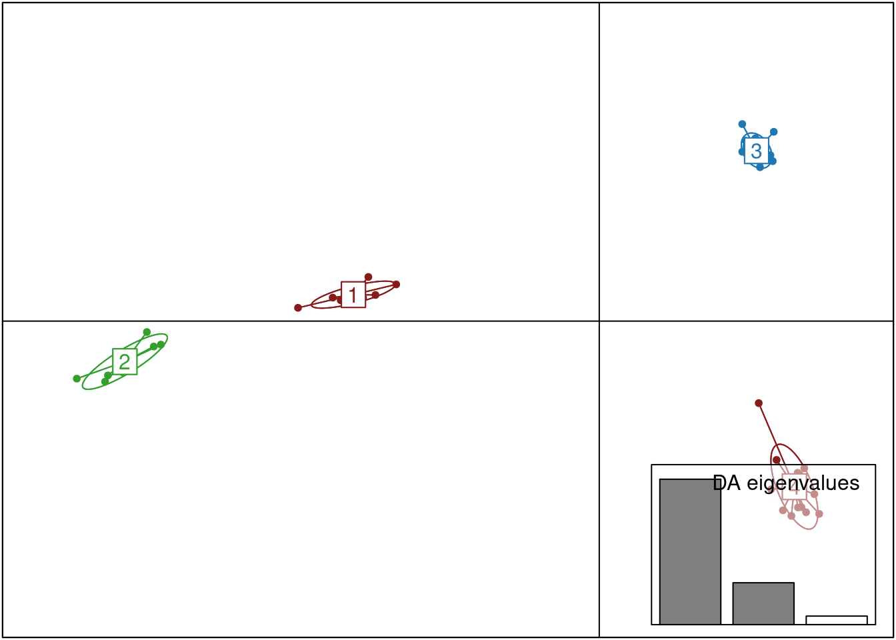
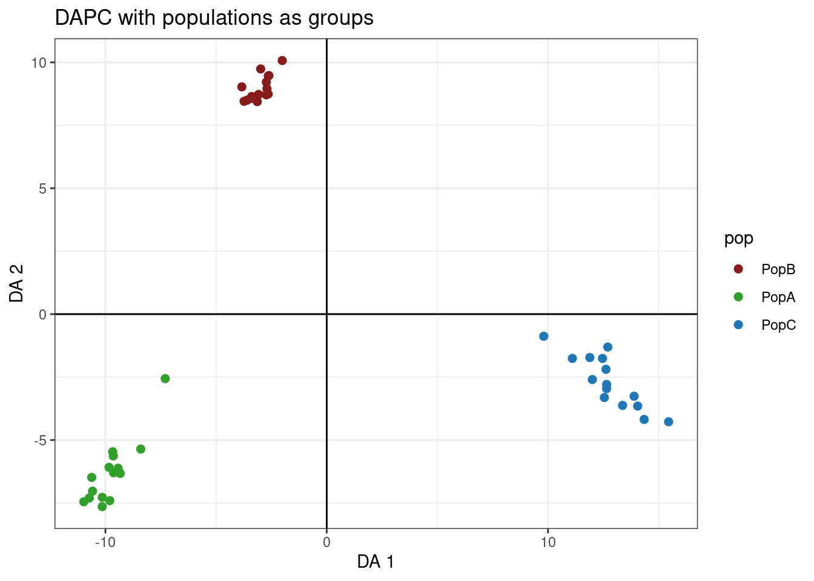

library(pcadapt)
filename <- read.pcadapt("../Processed_Data/array.bed", type = "bed")PCA and DAPC
PCA
One important consideration is that we need to deal with linkage in our data set. We will use PCAdapt to help us with this and to illustrate why.
Load data
First, we load in the data and convert our previous array.bed file to pcadapt input
Examine the PCs
First, we can start with a regular PCA. The first line of code below calculates the PCA with 5 PCs and the second line plots the amount of variance that each PC explains.
res <- pcadapt(filename, K = 5)
plot(res, option = "screeplot")For this analysis, the idea number of PCs is the one before the variance stars plateauing. Essentially, we’re looking for the “elbow.” Here, this would be 2.
Let’s plot the PCA. First, we need to recreate the list of population assignments. We’ll do this the same way as the last section.
table <- read.table("../Example_Data/strata", header = TRUE)
poplist.names <- table$Population
plot(res, option = "scores", pop = poplist.names)
This might look normal, but you’ll notice that two of the populations are tightly grouped around PC1. We should check too make sure this pattern isn’t being driven by a linkage in the genome. To do this, we can look at the loading scores of the PCs. Loading scores show how much a particular SNP factors into a PC.
par(mfrow = c(2, 2))
for (i in 1:4)
plot(res$loadings[, i], pch = 19, cex = .3, ylab = paste0("Loadings PC", i))
These values should be evenly distributed across the genome. You’ll notice that PC1 has a bit of a pattern to it. Let’s zoom in.
plot(res$loadings[, 1], pch = 19, cex = .3, ylab = paste0("Loadings PC", i))Now, you can definitely see a weird pattern between Index 30,000 and 40,000. This is from several large genomic inversion in the oyster genome. All of those SNPs are highly linked and are driving a large porition of our PCA.
Dealing with linkage using LD clumping
Linkage Disequilibrium can affect ascertainment of population structure (Abdellaoui et al. 2013). Users analyzing dense data such as SNP Array data should account for LD in their PCAs and PCA-based genome-scans.
Thankfully, PCAdapt has a built in feature that allows us to clump SNPs by LD, basically reducing the data to a more informative subset.
res <- pcadapt(filename, K = 10, LD.clumping = list(size = 500, thr = 0.2))
plot(res, option = "screeplot")This changed a bit, and we now have possibly 4 informative PCs. Let’s take a look at the loadings:
res <- pcadapt(filename, K = 4, LD.clumping = list(size = 500, thr = 0.2))
par(mfrow = c(2, 2))
for (i in 1:4)
plot(res$loadings[, i], pch = 19, cex = .3, ylab = paste0("Loadings PC", i))Great! Now, we no longer see strong patterns in the loading scores. We can proceed.
plot(res, option = "scores", pop = poplist.names)Now, we can see there is much more separation in PopA vs PopB than there was before.
Filter data for PCA and DAPC
PCAdapt is great for filtering and for looking for loci under selection (not covered in this tutorial), but there are other packages that are a little more handy for calculating and plotting PCAs and DAPCE. We can filter our VCF to only the post-clumped loci (those with less LD).
First, we will reload our VCF file into R in case you’re starting from scratch, but we made this in the previous tutorial:
library(vcfR)
***** *** vcfR *** *****
This is vcfR 1.15.0
browseVignettes('vcfR') # Documentation
citation('vcfR') # Citation
***** ***** ***** *****my_vcf <- read.vcfR("../Processed_Data/array.vcf")Scanning file to determine attributes.
File attributes:
meta lines: 15
header_line: 16
variant count: 60517
column count: 54
Meta line 15 read in.
All meta lines processed.
gt matrix initialized.
Character matrix gt created.
Character matrix gt rows: 60517
Character matrix gt cols: 54
skip: 0
nrows: 60517
row_num: 0
Processed variant 1000
Processed variant 2000
Processed variant 3000
Processed variant 4000
Processed variant 5000
Processed variant 6000
Processed variant 7000
Processed variant 8000
Processed variant 9000
Processed variant 10000
Processed variant 11000
Processed variant 12000
Processed variant 13000
Processed variant 14000
Processed variant 15000
Processed variant 16000
Processed variant 17000
Processed variant 18000
Processed variant 19000
Processed variant 20000
Processed variant 21000
Processed variant 22000
Processed variant 23000
Processed variant 24000
Processed variant 25000
Processed variant 26000
Processed variant 27000
Processed variant 28000
Processed variant 29000
Processed variant 30000
Processed variant 31000
Processed variant 32000
Processed variant 33000
Processed variant 34000
Processed variant 35000
Processed variant 36000
Processed variant 37000
Processed variant 38000
Processed variant 39000
Processed variant 40000
Processed variant 41000
Processed variant 42000
Processed variant 43000
Processed variant 44000
Processed variant 45000
Processed variant 46000
Processed variant 47000
Processed variant 48000
Processed variant 49000
Processed variant 50000
Processed variant 51000
Processed variant 52000
Processed variant 53000
Processed variant 54000
Processed variant 55000
Processed variant 56000
Processed variant 57000
Processed variant 58000
Processed variant 59000
Processed variant 60000
Processed variant: 60517
All variants processedld_filtered_vcf <- my_vcf[!is.na(res$loadings[,1]),]Next, we will convert our vcfR file to a genlight input which can be used by the package adegenet. We will also use the strata and setPop function to enter population level information. Remember, we made the strata_df in the previous tutorial, but we will remake it here just in case.
library(adegenet)Loading required package: ade4
/// adegenet 2.1.10 is loaded ////////////
> overview: '?adegenet'
> tutorials/doc/questions: 'adegenetWeb()'
> bug reports/feature requests: adegenetIssues()mygl <- vcfR2genlight(ld_filtered_vcf,n.cores =2)
strata<- read.table("../Example_Data/strata", header=TRUE)
strata_df <- data.frame(strata)
strata(mygl) <- strata_df
setPop(mygl) <- ~PopulationBelow, we use the PCA function of adegent to create a PCA.
oyster.pca <- glPca(mygl, nf = 3)Let’s look at how much variance each PC explains:
barplot(100*oyster.pca$eig/sum(oyster.pca$eig), col = heat.colors(50), main="PCA Variance Explained")
title(ylab="Percent of variance\nexplained", line = 2)
title(xlab="PC", line = 1)We basically have three informative PCs here. Let’s plot the individuals on the first two PCs:
myCol <- colorplot(oyster.pca$scores,oyster.pca$scores, transp=TRUE, cex=4)
abline(h=0,v=0, col="grey")
add.scatter.eig(oyster.pca$eig[1:10],2,1,2, posi="bottomright", ratio=.16)The plot above is combining information from the first 3 PCs to color dots, and using the first two for x,y coordinates. We can see possibly four groups across all PCs.
We can also port this to ggplot and color by population:
library(ggplot2)
oyster.pca.df <- as.data.frame(oyster.pca$scores)
oyster.pca.df$pop <- pop(mygl)
cols <-c("#871a1a","#33A02C","#1F78B4")
p <- ggplot(oyster.pca.df, aes(x=PC1, y=PC2, colour=pop))
p <- p + geom_point(size=2)
p <- p + stat_ellipse(level = 0.95, size = 1)
p <- p + scale_color_manual(values = cols)
p <- p + geom_hline(yintercept = 0)
p <- p + geom_vline(xintercept = 0)
p <- p + theme_bw()
pSo, we can see that we have some subtle structuring within PopC.
DAPC
Discriminant analysis of Principal Components (DAPC), allows us to either infer groups or put in groups a priori. DAPC seeks to maximize between group variance while minimizing within group variance. I’ll show you how this works both ways below.
DAPC with inferred groups
Finding clusters
Adegenet has a built in method for inferring population groupings or clusters. It runs interactively, so this code block below won’t run on it’s own. You need to paste it into the Console.
grp <- find.clusters(mygl, max.n.clust=10)I’m going to simulate this experience below:
First, you will see a screen like this:  For the purpose of picking clusters, the more PCs the better. Pick any number greater than 40.
For the purpose of picking clusters, the more PCs the better. Pick any number greater than 40.
Next screen will be:
We’d like to see an elbow here, where the lowest point would be the correct number. This doesn’t always work well for subtle structure. I’m going to pick 4 given the results above.
grp <- find.clusters(mygl, max.n.clust=10, n.pca =100, n.clust =4)We can make a simple table to see the assignments:
table(pop(mygl), grp$grp)
1 2 3 4
PopB 0 0 15 0
PopA 0 0 0 15
PopC 8 7 0 0This makes sense given our PCA. Let’s run the DAPC.
Discriminant Analysis
This is another interactive function. Run in the console.
oyster.dapc <- dapc(mygl, grp$grp)Again, I simulate this experience below. First screen is: 
Now this is different than finding clusters. You can overload the analysis with two many PCs. For this, you want to choose the lowes number that gets you > 60% of the variance. I would choose 25 or 30.
After you enter the number of PCs, you’ll see something like this:
 This is picking the number of discriminant functions. Because we put in four groups, there are only three. Truly, only the first two are informative. Let’s pick 2.
This is picking the number of discriminant functions. Because we put in four groups, there are only three. Truly, only the first two are informative. Let’s pick 2.
oyster.dapc <- dapc(mygl, n.pca = 25, n.da = 2, grp$grp)Now, let’s plot the analysis
scatter(oyster.dapc,col=cols,bg="white", solid=1)
We can also plot membership probabilities:
compoplot(oyster.dapc, posi="bottom",txt.leg=paste("Cluster", 1:4), lab="", ncol=4, xlab="individuals")
We can use ggplot to make this easier to read and put in the populations for each individual:
library(tidyr)
dapc.df <- as.data.frame(oyster.dapc$posterior)
dapc.df$pop <- pop(mygl)
dapc.df$indNames <- rownames(dapc.df)
cols4 <-c("#871a1a","#33A02C","#1F78B4","#FDBF6F" )
dapc.df <- pivot_longer(dapc.df, -c(pop, indNames))
colnames(dapc.df) <- c("Original_Pop","Sample","Assigned_Pop","Posterior_membership_probability")
p <- ggplot(dapc.df, aes(x=Sample, y=Posterior_membership_probability, fill=Assigned_Pop))
p <- p + geom_bar(stat='identity')
p <- p + scale_fill_manual(values = cols4)
p <- p + facet_grid(~Original_Pop, scales = "free")
p <- p + theme(axis.text.x = element_text(angle = 90, hjust = 1, size = 8))
p <- p + ylab("Posterior membership probability")
pDAPC with original populations
Again, instead of inferring groups, we can use our original populations.
oyster.dapc <- dapc(mygl, n.pca = 25, n.da = 2)
scatter(oyster.dapc, col = cols, cex = 2, legend = TRUE, clabel = F, posi.leg = "bottomleft", scree.pca = TRUE,
posi.pca = "topleft", cleg = 0.75, posi.da = "topright")Let’s make this better with ggplot
dapc.df <- as.data.frame(oyster.dapc$ind.coord)
dapc.df$pop <- pop(mygl)
dapc.df$indNames <- rownames(dapc.df)
p <- ggplot(dapc.df, aes(x=LD1, y=LD2, colour=pop))
p <- p + geom_point(size=2)
p <- p + scale_color_manual(values = cols)
p <- p + geom_hline(yintercept = 0)
p <- p + geom_vline(xintercept = 0)
p <- p + theme_bw()+ xlab("DA 1") + ylab("DA 2")+ ggtitle("DAPC with populations as groups")
p
Works cited and acknowledgements
Code for this tutorial was adapted from the following sources: